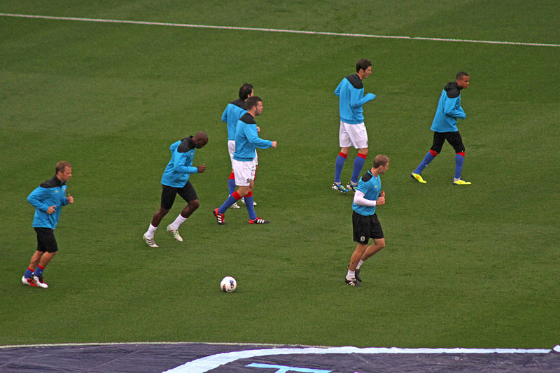

Los efectos de la entrada en calor varían según diversos factores entre los que podemos citar:
- Tipo de calentamiento: Si es una entrada en calor general o una entrada en calor especifica.
- Motivación existente: Si se realiza en alta competencia, en deporte amateur o social.
- Nivel del deportista: Una persona poco entrenada se fatiga fácilmente y no debería realizar una entrada en calor muy intensa.
- Carga del calentamiento (volumen e intensidad): Si la actividad a realizar posteriormente es muy intensa la entrada en calor deberá ser mayor.
- La edad: Los niños y los jóvenes precisan menos tiempo de entrada en calor que los adultos ya que con la edad los músculos y articulaciones necesitan más tiempo para adaptarse al esfuerzo.
- La hora del día: La entrada en calor por la mañana será más larga y progresiva que por la tarde ya que el cuerpo necesita más tiempo para adaptarse.
- La temperatura y otros factores climáticos: Si hace frío la entrada en calor durará más tiempo y viceversa.
- La alimentación: No se debe realizar ejercicio físico intenso después de comer ya que en ese momento se produce un gran aporte de sangre al aparato digestivo y la entrada en calor podría interrumpirlo.

Foto de Ronnie Macdonald disponible en Wikimedia Commons
.jpg){kind=link}